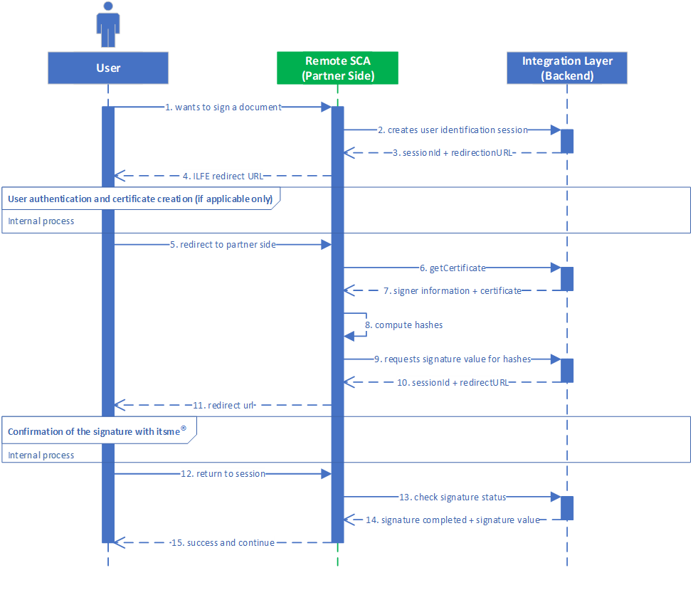

1. Introduction
itsme® is a trusted identity provider allowing partners to use verified identities for authentication and authorization on web desktop, mobile web and mobile applications.
The objective of this document is to provide all the information needed to integrate the Sign service.
At this moment only the Hash Signing variant is available and documented. In this variant, a remote Signature Creation Application (SCA) will provide the WYSIWYS experience to the User, provide the hash of the data to be signed to the itsme® service and use the returned digital signature value to format the signature in one of the AdES formats.
2. Prerequisites
Before you can integrate your application with itsme® service, you MUST set up a project in the itsme® B2B portal to obtain all the needed information.
3. Integrating Sign services
The itsme® Sign flow goes through the steps shown in the sequence diagram below.

- The User indicates on your end he wishes to sign a document with itsme®
- Your web desktop, mobile web or mobile SCA application sends a request to itsme® Integration Layer Back-End in order to create the User’s Identification session and obtain the User’s signing certificate to be include in the data to be signed.
- itsme® returns the session id and the redirect URL specific to the User to your SCA Back-End.
- Your SCA Front-End redirect the User to the Integration Layer Front-End of itsme®, meaning that the Iser will be authenticated in the meanwhile. If the User has no signature certificate yet, the certificate creation process will be initiated automatically.
- Finally, when the User is authenticated and has a signature certificate, he is redirected to the your SCA Front-End. The redirection to your SCA Front-End should be (almost) transparent to the User (aka possible displaying of a spinner) as the laps of time between step 5 and step 11 of this diagram should be extremely short.
- Your SCA Back-End contacts the itsme® Integration Layer Back-End to get the signature certificate of the User.
- The itsme® Integration Layer Back-End returns your SCA Back-End the signer information as well as the signature certificate of the User.
- Your SCA Back-End constructs the data to be signed and the hash of the signature will be computed by yourself. The value of this hash MUST be base64url encoded.
- Your SCA Back-End will provide the hash to the itsme® Integration Layer Back-End to request the digital signature value.
- A session id and redirect URL are returned by itsme® to your SCA Back-End.
- Your SCA frontend will then redirect the User to the signature webpage of itsme®, where some explanations about how to process the signature are displayed. Before being able to confirm the signature with the itsme® App, the User will also need to perform a security check, known as poka yoke, is also shown to the User. This consists of three icons that are displayed in the signature webpage, of which one is highlighted in tangerine. The User must make sure that the sequence of three icons displayed his App is the same as the one displayed in the signature webpage. To continue the confirmation of the action, the User must select in his App the icon that is highlighted in tangerine on the signature webpage.
- The session of the User at itsme® side ends as the process is finished and the User is redirected to your SCA Front-End.
- Your SCA Back-End will contact the itsme® Integration Layer Back-End to check the signature status.
- itsme® then returns the signature completion status and the digital signature value.
- At this stage, your SCA is able to confirm the success of the operation and display a success message.
3.1. Checking itsme® Sign configuration
To simplify implementations and increase flexibility, all needed key-value pairs about itsme® configuration can be retrieved from a JSON document, such as
- the policies
- commitment types
- supported languages
- ...
The JSON document for itsme® Sign service may be retrieved from:
| Environment | URL |
|---|---|
| SANDBOX | |
| PRODUCTION |
3.2. Starting a new User identification session
First, you will forg a HTTPS POST request that MUST be sent to the itsme® User Identification Endpoint. The itsme® User Identification Endpoint can be retrieved from the itsme® JSON document, using the key user_identification.
Below you will find a number of mandatory and recommended parameters to integrate in the HTTPS POST query string:
POST /https://uatb2b.sixdots.be/qes-partners/1.0.0/user_identification HTTP/1.1
{
"client_id":"myClientID",
"serviceCode":"myServiceCode",
"redirectUrl":"myServiceRedirectUrl",
"lang":"FR"
}
| Parameter | Type | Required | Description |
|---|---|---|---|
| client_id | String | Required | This MUST be the client identifier (e.g. : Project ID) you received when registering your application in the itsme® B2B portal. |
| sub | String | Optional | An identifier for the User, unique among all itsme® accounts and never reused. Use sub in the application as the unique-identifier key for the User. |
| serviceCode | String | Required | This parameter allows the application to express the desired scope. It MUST contain the value service:service_code, the itsme® service you want to use as defined for your application in the itsme® B2B portal. |
| lang | String | Optional | This parameters defines the recommended language to be used for GUI interaction. If the parameter is not defined in the request, then the language that will be used is the one of the cookie. This defaults to the language used in the browser if there is no cookie. |
| redirect_uri | String | Required | This is the URI to which the Identification Response should be sent. This MUST exactly match the redirect URI of the specified service defined when registering your application in the itsme® B2B portal. |
3.3. Capturing the Identification Response
If the User is successfully authenticated and authorizes access to the Identification Request, itsme® will return a response to your server component. This is achieved by returning an Identification Response to the redirect_uri specified previously in the Identification Request.
{
"status": "OK",
"asyncRespId": "4kpr55zdi2mk9ns27awgngkltoenfy04gi9b",
"identificationUrl": "https://uatmerchant.itsme.be/qes/identify_yourself?language=FR&q=ss4liz8kjk1xxz8taj3nbxae7zqty6eq"
}
The response will contain:
| Values | Type | Returned | Description |
|---|---|---|---|
| status | String | Always | It is the status of User Identification Request. |
| statusReason | String | Always | It explains the reason of a failure. No reason is given in case the request status is pending or success. |
| asyncRespId | String | Always | This parameter is the identifier of a User identification session. |
| identificationUrl | String | Always | This is the itsme® URL of the signature welcome page. On this webpage the User will identify himself by entering his mobile phone number. |
The following table describes the various error codes that will be returned to the User using the appropriate HTTPS status code:
| Status code | Description |
|---|---|
| 400 | Returned in case of invalid Request Object. |
| 409 | Returned in case of error. |
| 500 | Internal Server Error. |
3.4. Requesting the User certificate
By calling the Certificate Endpoint, you are checking the status of the User certificate.
Below you will find a number of mandatory and recommended parameters to integrate in the HTTPS POST query string:
POST /https://uatb2b.sixdots.be/qes-partners/1.0.0/user_identification/status HTTP/1.1
{
"partnerCode":"myPartnerCode",
"serviceCode":"myServiceCode",
"asyncRespID":"4kpr55zdi2mk9ns27awgngkltoenfy04gi9b"
}
| Parameter | Type | Required | Description |
|---|---|---|---|
| client_id | String | Required | This MUST be the client identifier (e.g. : Project ID) you received when registering your application in the itsme® B2B portal |
| serviceCode | String | Required | This parameter allows the application to express the desired scope. It MUST contain the value service:service_code, the itsme® service you want to use as defined for your application in the itsme® B2B portal. |
| asyncRespId | String | Required | This parameter is the identifier of a User identification session. This value can be retrieved from the values obtained in the Identification Response. |
3.5. Getting the User certificate info
If the Certificate Request has been sucessfully validated we will return an HTTP 200 OK response as in the example aside.
The response body will include the following values:
{
"status": "OK",
"userCode": "9o8f04wm1g0bdc8gmgcuxp2ehgn7txh0x2kq",
"certificate": "user-certificate"
}
| Values | Type | Returned | Description |
|---|---|---|---|
| status | String | Always | It is the status of User Identification Request. |
| sub | String | Optional | An identifier for the User, unique among all itsme® accounts and never reused. Use sub in the application as the unique-identifier key for the User. |
| certificate | String | Always |
3.6. Processing a Sign Request
This request has to be created in order to get the information about the Sign session.
Below you will find the minimal set of parameters required for processing the HTTPS POST query string:
POST /https://uatb2b.sixdots.be/qes-partners/1.0.0/sign_document HTTP/1.1
{
"inDocs": {
"docHash":[
{
"di":[
{
"alg":"http://www.w3.org/2001/04/xmlenc#sha256",
"value":"f4OxZX/x/FO5LcGBSKHWXfwtSx+j1ncoSt3SABJtkGk="
}
],
"id":"ContractCar20180914u89236456.pdf"
}
]
},
"reqID": "ReqID4va0acsef3mv5ft1dp71",
"asyncRespID": null,
"optInp": {
"profile": [
"urn:be:itsme:dss:1.0",
"urn:oasis:names:tc:dss:1.0:profiles:asynchronousprocessing",
],
"policy": [],
"lang": "FR",
"nonce": null,
"sigAlgo": null,
"itsme": {
"signer": {
"userCode": "9o8f04wm1g0bdc8gmgcuxp2ehgn7txh0x2kq"
},
"partnerCode": "myPartnerCode",
"serviceCode": "myServiceCode",
"description": [
{
"lang": "EN",
"value": "Car insurance contract"
},
{
"lang": "FR",
"value": "Contrat d’assurance voiture"
},
{
"lang": "NL",
"value": "Contract verzekering auto"
},
{
"lang": "DE",
"value": "Kfz-Versicherungsvertrag"
}
],
"callbackUrl": null,
"redirectUrl": "myServiceRedirectUrl",
"expiryTimestamp": null,
"legalNotice": null,
"signPolicy": {
"signPolicyRef": "ITSME_DEFAULT",
"commitmentTypeRef":"1.2.840.113549.1.9.16.6.5",
"signerRole": [
{
"lang": "EN",
"value": "General Manager"
},
{
"lang": "FR",
"value": "Gestionnaire"
},
{
"lang": "NL",
"value": "Zaakvoerder"
},
{
"lang": "DE",
"value": "Manager"
}
]
}
}
}
}
| Parameter | Type | Required | Description |
|---|---|---|---|
| inDocs | Required | This contains the element to be signed. | |
| docHash | Required | This parameter defines the list of hashes to be signed by itsme®, one item per hash. | |
| id | String | Required | This is the ID of the hash(es) to be signed. You should provide us this information when registering your application in the itsme® B2B portal. Currently, only single hash signing is allowed. |
docHash | | Required | This parameter defines the list of hashes to be signed by itsme®, one item per hash.
reqID | String | Required | This is the ID of the request that you transfer. asyncRespId | String | Optional | This parameter is the identifier of a User identification session. This value can be retrieved from the values obtained in the Identification Response. optInp | String | Required | Those are additional information needed for the signature request.